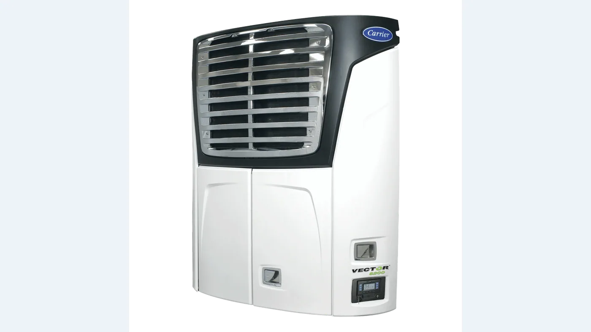

Carrier Transicold presentó el 25 de agosto el Vector 8200, su primer equipo frigorífico sin motor con capacidad multitemperatura para semirremolques. La solución está disponible a través de la red norteamericana de la marca y apunta a empresas de alimentos frescos o congelados que necesitan capacidad adicional de frío dentro de sus instalaciones.
La aclaración principal es operativa: el anuncio describe almacenamiento estacionario. El semirremolque funciona como una cámara móvil dentro del predio, conectado a la red u otra fuente externa. No debe interpretarse automáticamente como un sistema para mantener frío durante un viaje sin alimentación.
Para qué problema fue diseñado
Los depósitos frigoríficos atraviesan picos estacionales, reformas o aumentos imprevistos de demanda. Construir una cámara permanente requiere obra, habilitaciones y tiempo. Un semirremolque refrigerado puede sumar espacio rápidamente y trasladarse dentro de la operación cuando cambia la necesidad.
Los equipos tradicionales pueden usar un motor diésel para accionar el sistema. En una instalación eso genera consumo, ruido, mantenimiento y emisiones directas. El Vector 8200 elimina ese motor y utiliza electricidad externa. El beneficio depende de la tarifa, la capacidad de la red y la fuente de generación disponible.
Una, dos o tres temperaturas
Carrier ofrece configuración para uno, dos o tres compartimentos. Hay cuatro opciones de evaporadores remotos para distribuir el frío según la división interna. De ese modo, un mismo semirremolque puede almacenar productos con necesidades distintas, siempre que la carrocería, las mamparas y la circulación de aire estén correctamente preparadas.
La capacidad declarada alcanza 58.000 BTU por hora a 35 °F, 33.500 BTU por hora a 0 °F y 22.000 BTU por hora a -20 °F, bajo las condiciones de ensayo informadas por el fabricante. La potencia disponible disminuye cuando baja la temperatura objetivo, algo normal en refrigeración y esencial para dimensionar la carga.

Cómo gestiona la alimentación
El sistema TRU-Demand E-Drive monitorea la energía disponible y ajusta el funcionamiento ante cambios en la alimentación. Carrier indica que puede sostener el voltaje durante caídas y limitar el esfuerzo sobre la red cuando varias unidades reinician al mismo tiempo.
Ese control resulta importante en instalaciones donde compresores, cámaras y cargadores comparten tableros. Un arranque simultáneo puede generar picos. La planificación debe considerar potencia contratada, protecciones, cableado, puesta a tierra y procedimientos seguros de conexión.
Controles, datos y telemetría
El Vector 8200 utiliza controles APX con funciones IntelliSet y ProductShield. El operador puede configurar parámetros según el producto y proteger la carga ante cambios incorrectos. DataLink registra el historial de temperatura, mientras que Lynx Fleet agrega monitoreo remoto y comunicación en ambos sentidos.
La trazabilidad es especialmente valiosa en alimentos y productos sensibles. No reemplaza sensores calibrados ni protocolos de calidad, pero facilita detectar aperturas, interrupciones eléctricas y desvíos. Para una auditoría, el dato debe vincularse con fecha, unidad, zona y producto.
Componentes pensados para reducir mantenimiento
El fabricante menciona un compresor scroll hermético, condensador de microcanales, ventiladores de corriente alterna sin mantenimiento y válvula de expansión electrónica. Al no existir un motor diésel dedicado, desaparecen cambios de aceite, filtros y combustible asociados a ese propulsor.
Eso no convierte al equipo en libre de mantenimiento. Siguen siendo críticos la limpieza del condensador, el estado de evaporadores, drenajes, conexiones, contactores, aislación y sensores. También deben revisarse juntas de puertas y paneles: una pérdida térmica obliga al sistema a trabajar más.
Carga de baterías auxiliares
La unidad incorpora un cargador de 40 amperes para la batería y admite carga solar en el techo. También puede ofrecer un cargador opcional para la batería de la plataforma elevadora. Integrar esos consumos ayuda a mantener servicios auxiliares, aunque la instalación debe respetar límites eléctricos y protecciones.
Qué debería evaluar una empresa
- Uso real: confirmar que la necesidad es almacenamiento estacionario y definir las horas de operación.
- Potencia: verificar red disponible, tableros, protecciones y costo de energía.
- Producto: calcular temperatura, volumen, rotación y carga térmica por apertura de puertas.
- Carrocería: revisar aislamiento, mamparas y circulación de aire.
- Respaldo: prever alarmas y un plan ante cortes eléctricos.
- Servicio: asegurar técnicos, refrigerante, sensores y repuestos compatibles.
Impacto ambiental y económico
Dentro del predio, el equipo evita consumo de diésel, ruido y emisiones directas del motor frigorífico. La huella total depende de cómo se genera la electricidad y de la eficiencia de la instalación. También influyen la ocupación del semirremolque y la calidad del aislamiento.
La comparación económica debe incluir inversión, tarifa eléctrica, demanda máxima, mantenimiento, combustible evitado y valor de la mercadería protegida. En operaciones estacionales, la flexibilidad puede ser más importante que el ahorro energético aislado.
Qué significa para Argentina
Carrier anunció disponibilidad mediante su red de Norteamérica; no informó una comercialización argentina en este comunicado. Sin embargo, el concepto es relevante para frigoríficos, centros de distribución y productores que necesitan ampliar capacidad durante cosechas, campañas o mantenimientos de planta.
Antes de adoptar una solución equivalente en el país habrá que verificar frecuencia y tensión, homologación, servicio local, refrigerante y disponibilidad de repuestos. La oportunidad es concreta, pero depende de una instalación eléctrica adecuada y de un uso bien definido.